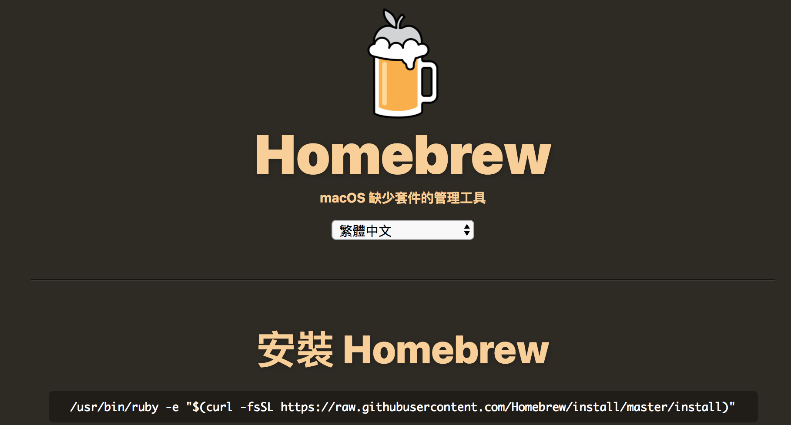
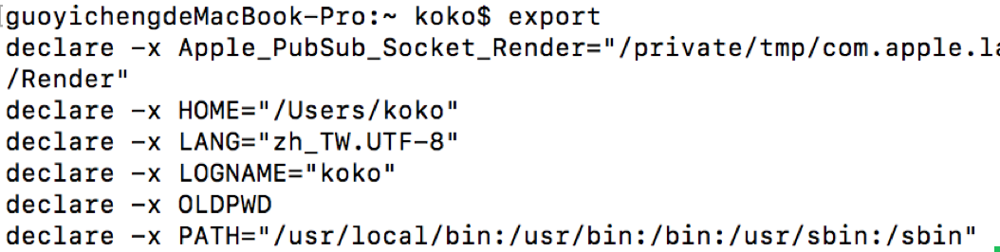
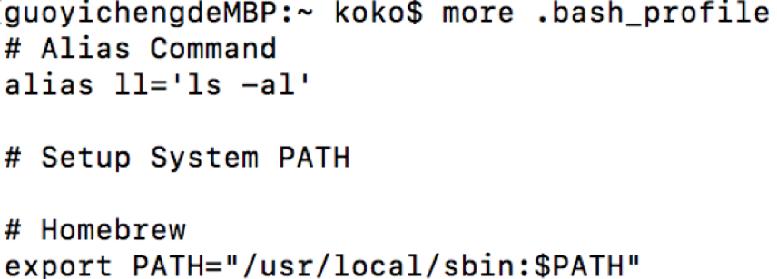
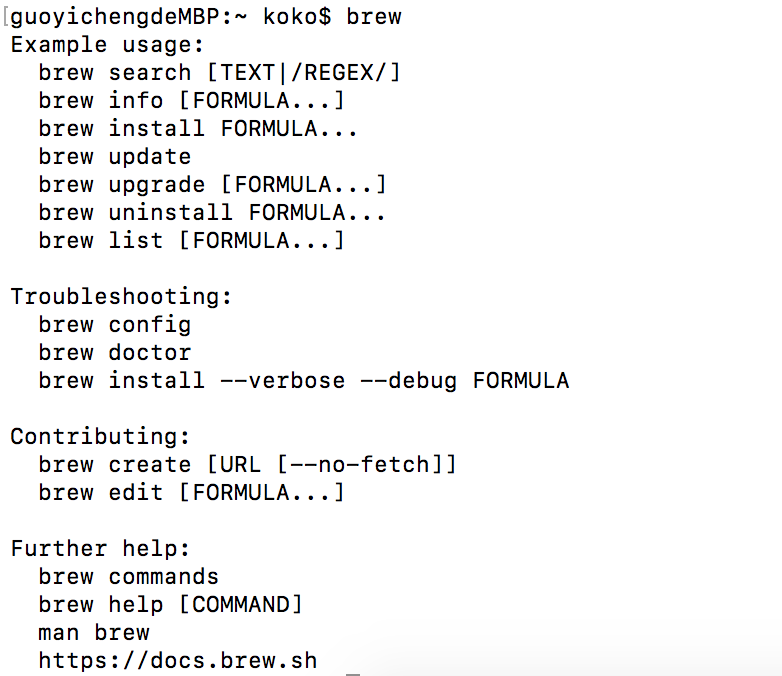
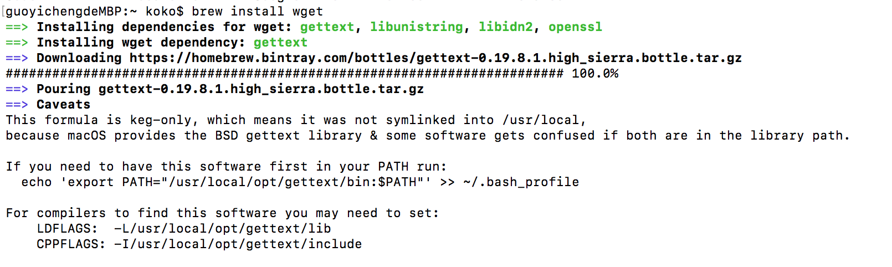

Homebrew (1) - Mac 上安裝 Homebrew 套件管理工具
Posted on Wed 06 March 2019 in Homebrew
前言
Homebrew 是 Mac 專用的套件管理工具，如同 Linux 中的 apt 或是 yum 工具，許多的套件工具都可以透過 Homebrew 安裝，並且管理（如列出安裝的套件、更新套件、修正套件、移除套件等等）上非常方便，即便要尋找也都會放在相同的目錄下。
安裝步驟
步驟一：下載 Homebrew
安裝步驟非常簡單，進入 Homebrew 官網，依照步驟，在 Terminal 輸入下列此串：

$> /usr/bin/ruby -e "$(curl -fsSL https://raw.githubusercontent.com/Homebrew/install/master/install)"
安裝過程如下圖：

步驟二：建立環境變數
安裝完後，為了要使 Homebrew 的指令可以被 Mac 的 Terminal 中的 Bash 程式讀取到，需要設定 /usr/local/bin 與 /usr/local/sbin 至環境變數。
建立一個 .bash_profile 或是 .profile （如果已有其中一個檔案則不需再次建立）在自己的家目錄下：
$> cd ~ # 移動到家目錄
$> vim .bash_profile
並且在檔案中新增此行：
export PATH=/usr/local/bin:/usr/local/sbin:$PATH
或是可以透過 Shell 的另一種語法雙引號來設定，如下
export "PATH=/usr/local/bin:/usr/local/sbin:$PATH"
設定完成後，關閉 Terminal 應用程式重開 或是 直接在 Terminal 中輸入以下指令啟動 .bash_profile 或 .profile 啟動即可（以下以 .bash_pofile 為例 ）：
$> source ~/.bash_pofile # 以 source 指令啟動檔案執行並生效
如果原先 Mac 中的預設 PATH 環境變數已有其中一個路徑則可以只需要把剩餘沒有的補上即可，或是兩個皆有即可忽略。
例如我的 Mac 透過 export 指令發現 PATH 系統環境變數中缺少 /usr/local/sbin：

則編輯 ~/.bash_profile 補上去，如下圖：

完成後，重新開啟 Terminal 應用程式，再次透過 export 檢查，會發現剛剛補上去的 /usr/local/sbin 已經作用在系統環境中：
步驟三：測試 brew 指令
可以透過輸入 brew 來做所有跟 Homebrew 有關的套件管理操作行為，如下圖：

到此即表示安裝順利完成囉！
安裝套件：以 wget 為例
如果要安裝套件裝在 Mac 上，可以透過 brew install 指令再補上要安裝的套件名即可，例如以下以 wget 可為例，wget 是一個可以用來直接在終端機上安裝網路上的檔案內容指令工具：
$> brew install wget

Homebrew 資料夾目錄介紹
在上述中所提到的環境變數設定步驟，Homebrew 會在安裝完後放在 /usrl/local 下，所以透過 Homebrew 下載安裝或管理套件時，實際上會影響到的有 /usrl/local 下這幾個目錄：
Caskroom Frameworks bin include opt share
Cellar Homebrew etc lib sbin var
Cellar：此文件夾存放的是所有包安裝所在路徑，包括二進制，文檔和配置文件。並且會依照Cellar/套件名稱/版本號/的形式與為規範放置opt：由於版本號隨著跟新而改變的，所以需要一個固定不變的路徑作為我們訪問二進制和文檔的路徑，這就是opt的作用。Homebrew：brew 程序所在路徑.bin：所有包安裝之後二進制都會鏈接到這個路徑下share：所有包安裝之後的文檔都會鏈接到這個路徑下etc：同上，所有套件的配置文件lib：同上，所有套件相關庫文件Caskroom：使用 Homebrew Cask 安裝的應用程式 app 的相關資訊或設定的文件